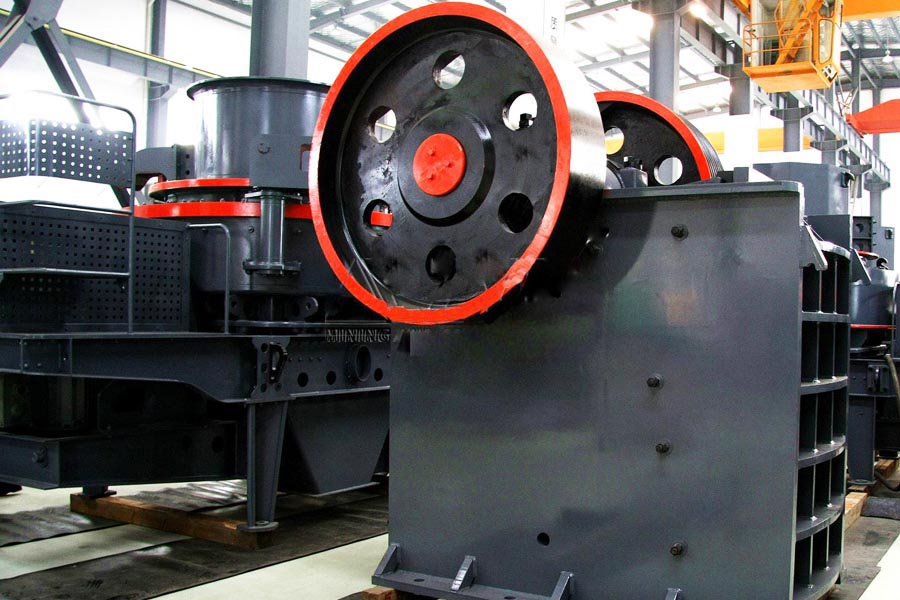

Construction waste crushing production line

Mobile construction waste crushing station for urban construction waste crushing.
Bauxite Ore Crushing Plant
Bauxite Ore Crushing Plant. How to choose bauxite crusher, bauxite grinder manufacturers, bauxite processing equipment offer, in many manufacturing mining machinery crusher, stone crusher manufacturer, how to select bauxite crusher equipment? CAG aluminum bauxite grinder, milling machine, sand making equipment sold more firebrick, refractories plant.
Bauxite punching crusher, bauxite, also known as alumina or bauxite, the main ingredient is alumina, after crushing can be used for aluminum, refractory system. Bauxite processing equipment is more commonly bauxite crusher, bauxite production line, bauxite processing equipment.

Bauxite crusher
Because the tariff is low, you can (Bauxite crusher) to save a lot of costs, it can also be purchased to get more benefits, our products and designs for you is really value for money.
Bauxite mine is actually kind of ore minerals collectively formed mainly by gibbsite, a boehmite or a diaspore which can be used in the industry. Bauxite mine can be used widely in many industries among which the most important is to be used for refining aluminum in aluminum Industry, refractory and abrasive materials, and raw materials for high alumina cement. The quality requirements to bauxite mining vary according to their different applications.
Guinea is the world's largest supplier of bauxite mine which has the world's approximately 1 / 3 of the bauxite mine reserves. Guinea, with its rich mineral resources has attracted many international bauxite mining companies. The other countries which also have large amount of bauxite mine reserves are Australia, Brazil, and Jamaica. With so much bauxite mine, it’s very important for bauxite mining and bauxite crushing or bauxite grinding with high efficiency. As the professional stone crusher manufacturer and grinding mill manufacturer, xsm has exported large amount of bauxite crusher and grinding mill plants to the bauxite mining countries.
PF series bauxite crusher - crusher, bauxite crusher is divided into two chambers and three cavity two series, capable of handling side not longer than 500mm, not more than 250MPa compressive strength of various coarse, medium and fine material (granite, limestone, concrete, etc.).
Bauxite Application in industry
Guinea bauxite crusher for sale. As we all know, aluminum is the world's second most important metal after steel. As the aluminum is of small proportion, good thermal conductivity, easy mechanical processing and many other good properties, bauxite mining has been widely used in national economic departments. Bauxite mine is the best material for producing aluminum which is also the most important application areas for bauxite, The amount accounts for more than 90% of the world's bauxite mining. In the nonmetal field, bauxite is mainly used as refractories, abrasives, chemicals and the raw materials for high alumina cemen. Although the amount of bauxite in the proportion of non-metallic area is small, there is a wide range of uses. Bauxite mine is just indispensable in these areas.
Extraction of aluminum industry from bauxite mine
However, there is a very important procedure before extracting aluminum from bauxite mine that is bauxite crushing and bauxite grinding. Generally we choose xsm crusher or xsm grinding mill to crush the raw materials to be required fineness before used to produce aluminum. Bauxite crushing is relatively simple. Generally we use the professional xsm mining equipments for bauxite crushing. As the leading stone crusher manufacturer and grinding mill manufacturer, xsm has also been closely following the bauxite mining at home and abroad. xsm has manufactured large amount of mining equipments to global countries, such as jaw crusher series, impact crusher series, cone crusher series and the grinding mill series, etc. xsm mining equipments have been exported to more than 130 countries which are widely applied in mining industry including the bauxite crushing. For decades, xsm has always continued to innovate in the development, production, sales, and service sectors. Rich experience and high-tech applications help our products maximize customers’ satisfaction.
_ Bauxite bauxite crusher crusher plant, crusher mainly by the rotation of the rotor within the cabin, drive to combat the impact hammer is rotated so that the final stone crushing, stone rotor role in the collision alum Soil crusher brand, forming a large stone whirlpool increase between materials.
Bauxite Ore Crushing Plant. When producing 40 tons of bauxite raw material crusher mill production line successfully put into operation in Guinea, bauxite thickness of the aggregate production line has been successfully put into operation, CAG mining machine developed a new bauxite jaw crusher, roll crusher , ball shine in this production line.
Leave Me A Message, Now
If you have any questions regarding equipment prices, production line configuration or other problems, you can send a message to us, we will contact you soon.